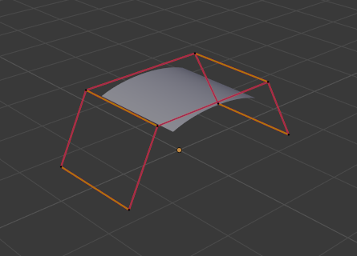

Editing¶
Surface editing has even fewer tools and options than its curve counterpart, but has many common points with it... So this page covers (or tries to cover) all the subjects, from the basics of surface editing to more advanced topics, like retopology.
Translation, Rotation, Scale¶
参考
G, R, SOnce you have a selection of one or more control points,
you can grab/move G, rotate R or scale S them, like many other things in Blender,
as described in the Manipulation in 3D Space section.
You also have in Edit Mode an extra option when using these basic manipulations: the proportional editing.
Transform Panel¶
See Transform Panel.
高级变换工具¶
参考
The To Sphere, Shear, Warp and Push/Pull transform tools are described in the Mesh Transformation section. Surfaces have no specific transform tools.
NURBS控制点的设置¶
参考
We saw in a previous page that NURBS control points have a weight, which is the influence of this point on the surface. You set it either using the big Set Weight button in the Curve Tools panel (after having defined the weight in the number button to the right), or by directly typing a value in the W number button of the Transform panel.
添加或挤出¶
参考
E, Ctrl-LMBUnlike meshes or curves, you cannot generally directly add new control points to a surface
(with Ctrl-LMB clicks), as you can only extend a surface by adding a whole U- or V-row at once.
The only exception is when working on a NURBS surface curve, i.e.
a surface with only one control point on each U- or V-row. In this special case,
all works exactly as with curves.
一旦使用过E之后，挤出的行会立即处于可拖拽状态。
有两点非常重要：
- Surfaces are 2D objects. So you cannot extrude anything inside a surface (e.g. "inner" row); it would not make any sense!
- The control "grid" must remain "squarish", which means that you can only extrude a whole row, not parts of rows here and there...
To summarize, the Extrude tool will only work, when one and only one whole border row is selected, otherwise nothing happens.
As for curves, you cannot create a new surface in your object out of nowhere,
by just Ctrl-LMB -- clicking with nothing selected.
However, unlike for curves, there is no "cut" option allowing you to separate a surface into several parts,
so you only can create a new surface by copying (Duplication) an existing one
Shift-D, or adding a new one with the Add menu.
例子¶
Images Fig. Selecting control-point. to Fig. Extruding. show a typical extrusion along the side of a surface.
In Fig. Selecting control-point. and Shift-R,
a border row of control points were highlighted by selecting a single control point,
and then using the handy row select tool Shift-R
to select the rest of the control points.

Selecting control-point. |

|
The edge is then extruded using E as shown in Fig. Extruding..
Notice how the mesh has bunched up next to the highlighted edge.
That is because the new extruded surface section is bunched up there as well.

Extruding.
By moving the new section away from the area, the surface begins to "unbunch".
You can continue this process of extruding or adding new surface sections until you have reached the final shape for your model.
开放或封闭一个曲面¶
参考
Alt-CAs in curves, surfaces can be closed (cyclic) or open. However, as surfaces are 2D, you can control this property independently along the U and V axes.
To toggle the cyclic property of a surface along one axis,
use Alt-C and choose either cyclic U or cyclic V from the pop-up menu.
The corresponding surface's outer edges will join together to form a "closed" surface.
Note
内面和外面
Surfaces have an "inner" and "outer" face, the first being black whereas the latter is correctly shaded. (There does not seem to be any "double sided" shading option for surfaces...). When you close a surface in one or two directions, you might get an entirely black object! In this case, just Switch Direction of your surface...
复制¶
参考
Similar as with meshes and curves, this tool duplicates the selection. The copy is selected and placed in Grab mode, so you can move it to another place.
However, with surfaces there are some selections that cannot be duplicated, in which case they will just be placed in Grab mode... In fact, only selections forming a single valid sub-grid are copyable; let us see this in practice:
- 你可以选择一个单独的控制点，然后沿着U向挤出一条曲面曲线，然后选定这整条U向控制点沿V向挤出成一个新的实实在在的曲面（此种情况似乎只有在曲面是一条曲线时才有机会成立）。
- You can copy a single continuous part of a row (or a whole row, of course). This will give you a new U-row, even if you selected (part of) a V-row!
- 你可以复制一个子栅格。
Note
Trying to duplicate several valid "sub-grids" (even being single points) at once will not work; you will have to do it one after the other...
删除元素¶
参考
X, Delete曲面的删除菜单有两个选项
- 删除顶点
此选项将删除选定行，却不会破坏曲面的连续性（也就是说，相邻的行将直接连在一起）。选定项必须遵守以下规则：
- 必须选定整行。
- Only rows along the same axis must be selected (i.e. you cannot delete both U- and V-rows at the same time).
还要记得的是，在给定某个向上（U或V），NURBS曲线的除数不能高于控制点的数量，所以当你删除某行控制点时，可能会造成曲线降阶。当然了，当曲面仅剩一行时，他就变成了曲面曲线（既没有可见的面），当所有的控制点都被选定，然后被删除时，曲面本身也就被删除了。
- 删除全部
- 类似于网格和曲线，这将删除物体的全部元素。（译注：这里与我的版本又有不同，如果您也和我一样，请不要奇怪。）
例子¶

Before and after.
In Fig. Before and after (left) a row of control points has been selected by initially
selecting the one control point and using Shift-R to select the remaining
control points. Then, using the Delete Menu X,
the selected row of control points is erased, resulting in Fig. Before and after (right).
联接或合并曲面¶
参考
Just like curves,
merging two surfaces requires that a single edge, a border row of control points,
from two separate surfaces is selected. This means that the surfaces must be part of the same object. For example,
you cannot join two surfaces while in Object Mode -- but you can of course, as with any objects of the same type,
join two or more Surface objects
into one object Ctrl-J -- they just will not be "linked" or merged in a single one...
Yes, it's a bit confusing!
This tool is equivalent to creating edges or faces for meshes
(hence its shortcut), and so it only works in Edit Mode.
The selection must contains only border rows of the same resolution
(with the same number of control points),
else Blender will try to do its best to guess what to merge with what, or the merge will fail
(either silently, or stating that Resolution does not match if rows with
different number of points are selected, or that there is Too few selections to merge
if you only selected points in one surface...).
To select control points of different surfaces,
in the same object, you must use either border select or circle select.
Holding down Ctrl while LMB will not work.
所以为了避免问题，你应该选择拥有相同控制点数的边缘行，还有一点，U行可以和V行合并，只要它们分辨率相同，blender会自动转换两个轴向以使他们正确匹配。
NURBS surface curves are often used to create objects like hulls, as they define cross sections all along the object, and you just have to "skin" them as described above to get a nice, smooth and harmonious shape.
例子¶
Fig. Joining ready is an example of two NURBS surface curves, not NURBS curves, in Edit Mode, ready to be joined. Fig. Joining complete is the result of joining the two curves.

Joining ready. |

Joining complete. |
细分¶
参考
Surface subdivision is most simple:
using either the Subdivide entry in the Specials menu
W, or the Subdivide button of the Curve Tools1 panel,
you will subdivide once all completely selected grids by subdividing each "quad" into four
smaller ones.
If you apply it to a 1D surface (a "surface curve"), this tool works exactly as with curves.
旋绕¶
参考
This tool is a bit similar to its mesh counterpart but with less control and options (in fact, there is none!).
只有当曲面是一条U向曲线（而不是V向）时，此命令才有效。他通过把U向行当成一个截面来旋转，并且自动调节权重最后得到一个完美的圆形挤出物体，对于管子和圆环也是一样的原理。
切换方向¶
参考
This tool will "reverse" the direction of any curve with at least one selected element (i.e. the start point will become the end one, and vice versa). Mainly useful when using a curve as path, or the bevel and taper options...
其他特殊选项¶
参考
The Specials menu contains exactly the same additional options as for curves, except for Set Radius and Smooth Radius.
转换¶
NURBS曲面不能转换内面和外面。
However, there is an "external" conversion available, from surface to mesh, that only works in Object Mode. It transforms a Surface object into a Mesh one, using the surface resolutions in both directions to create faces, edges and vertices.
杂项¶
You have some of the same options as with meshes, or in Object Mode.
You can separate a given surface P,
make other selected objects children
of one or three control points
Ctrl-P,
or add hooks to control some points with other objects.
The Mirror tool is also available, behaving exactly as with mesh objects.